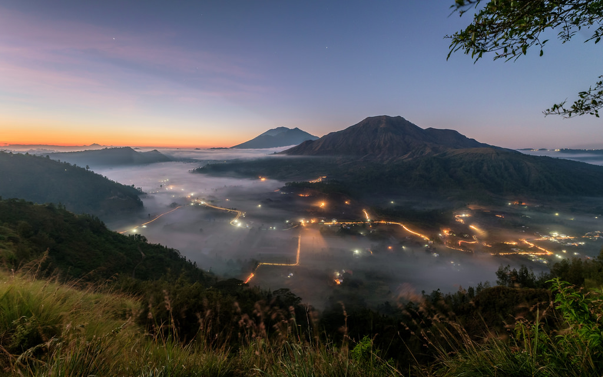
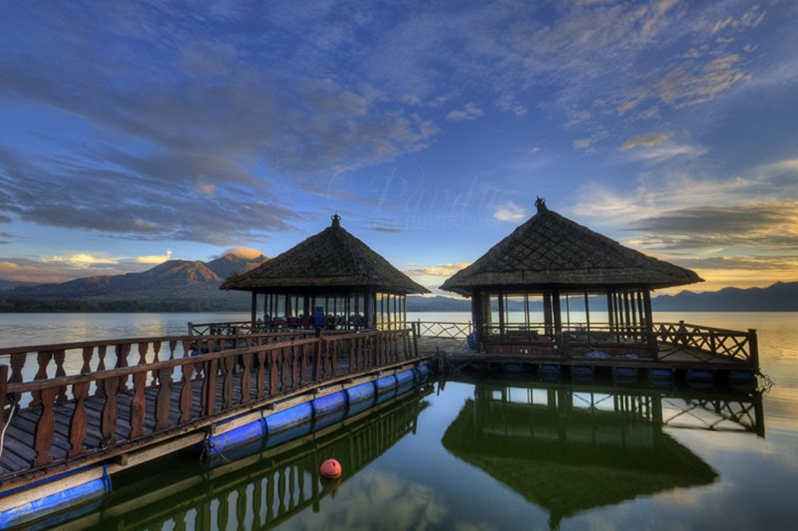
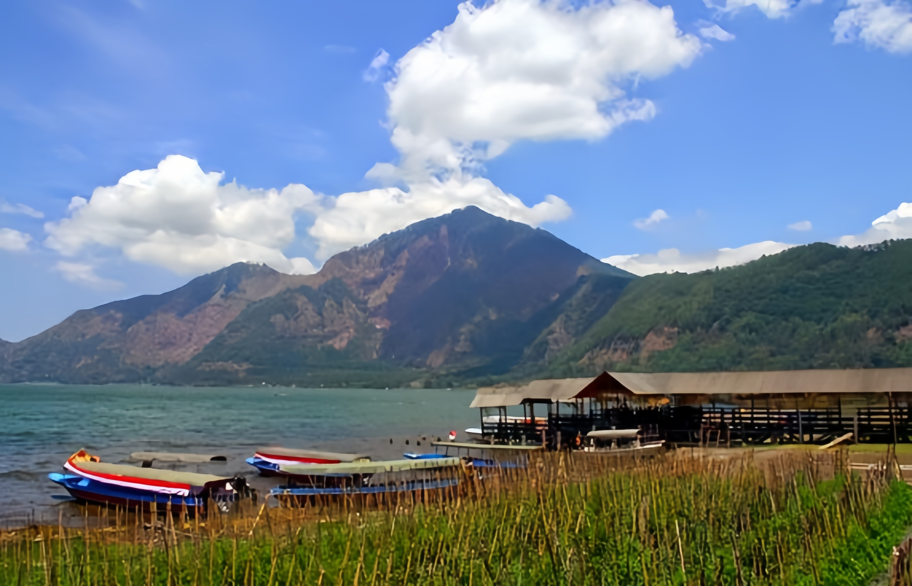
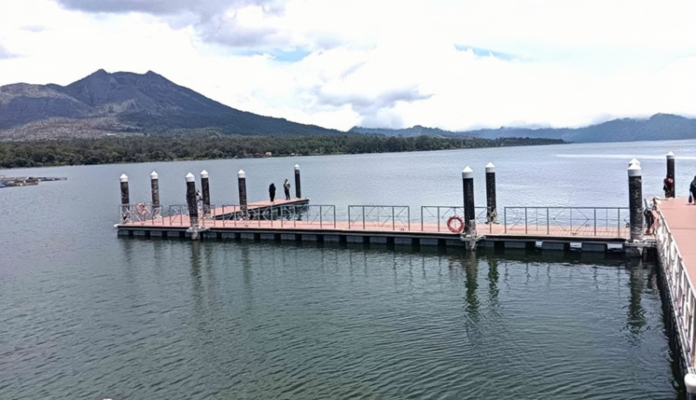
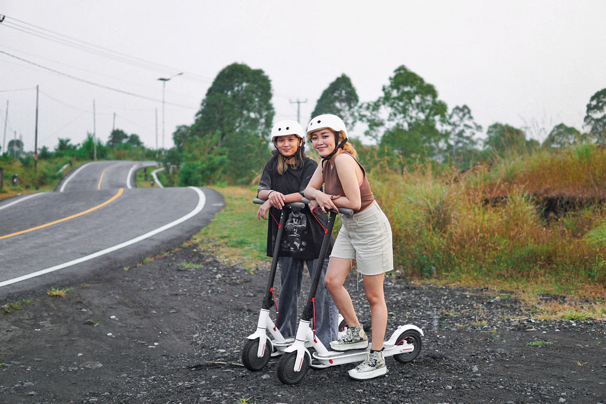
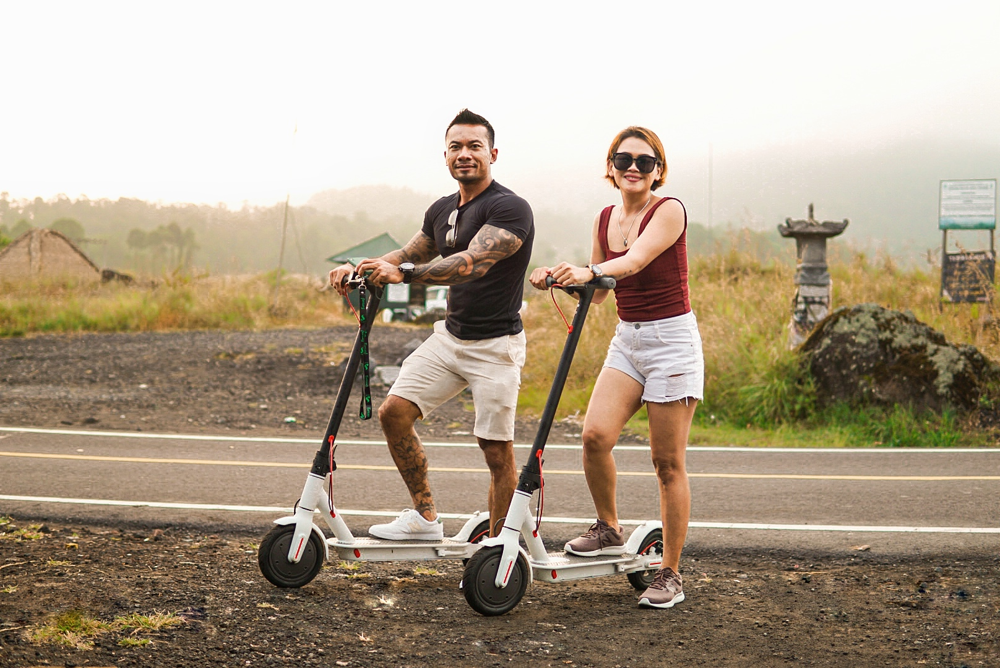

Pinggan
Pinggan Village is a village in Kintamani District, Bangli Regency, Bali, which is famous for its beautiful natural views and cool atmosphere. Located at an altitude of around 1,500 meters above sea level, this village offers spectacular views of the sunrise with the backdrop of Mount Batur and Lake Batur. Pinggan Village is also known for its authentic Balinese village life, where tourists can enjoy local agricultural activities and traditional ceremonies. Although not very commercial, the village provides several comfortable accommodations, ideal for those seeking tranquility and natural beauty in Bali.

Kedisan
Kedisan Village Tourist Attraction in Kintamani Bangli Bali is a tourist village which is said to be an ideal place to enjoy the panorama around Lake Batur with the majestic Mount Batur in the background up close. Kedisan Village presents the natural beauty of Batur from a different angle which is certainly no less beautiful. Kedisan is also known as a fertile area because the land is mixed with volcanic ash from Mount Batur. Therefore, it is not surprising that this area which has a lot of agricultural land is inhabited by people whose profession is farmers. Some of the typical commodities of this region include shallots, cabbage, chilies, tomatoes, and others.



Toya Bungkah
Toya Bungkah village is a village with rocky soil. Toya Bungkah is an area where lava flows from Mount Batur. This is where the name Toya Bungkah village was taken, where Toya means water and Bungkah means new large chunk. And from these boulders many water sources spread. The view offered by this village is rocks that come from the lava of Mount Batur which is usually called black lava.


